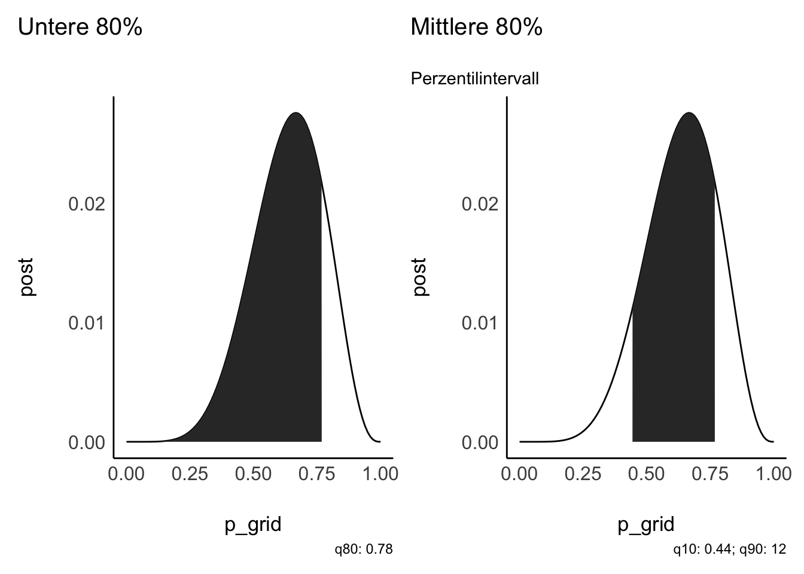
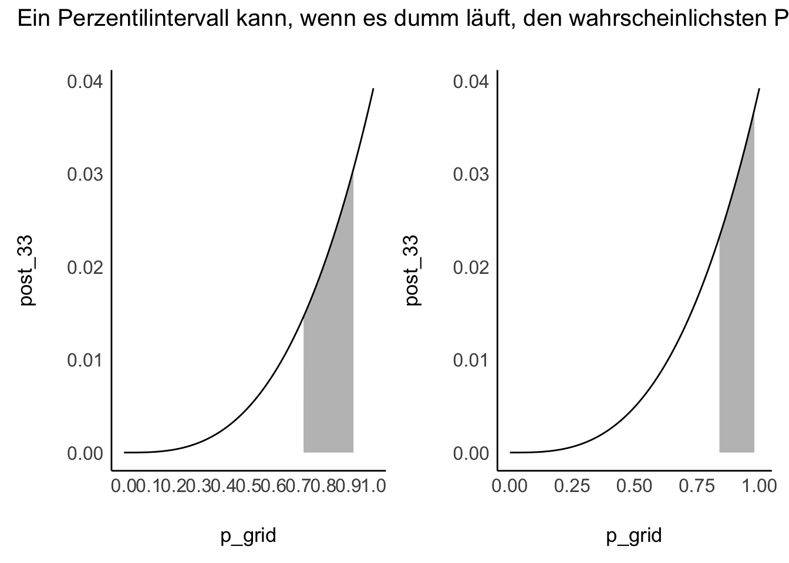

6 Die Post befragen

6.1 Lernsteuerung
6.1.1 Lernziele
Nach Absolvieren des jeweiligen Kapitels sollen folgende Lernziele erreicht sein.
Sie können …
- die Post-Verteilung anhand einer Stichprobenverteilung auslesen
- Fragen nach Wahrscheinlichkeitsanteilen der Post-Verteilung anhand der Stichprobenverteilung beantworten
- Fragen nach Quantilen anhand der Stichprobenverteilung beantworten
6.1.2 Benötigte R-Pakete
6.1.3 Begleitvideos
6.2 Mit Stichproben die Post-Verteilung zusammenfassen
6.2.1 Zur Erinnerung: Gitterwerte in R berechnen
Berechnen wir mit der Gittermethode (“Bayes-Box”) die Postverteilung für den Globusversuch.
Die Gittermethode ist ein Weg, die Posteriori-Verteilung zu berechnen. Die Posteriori-Verteilung birgt viele nützliche Informationen.
Modell: \(W=6\) Wasser, \(N=9\) Würfen und \(k=10\) Gitterwerten, also mit 10 Wasseranteilswerten zwischen 0 und 1.
Abb. Abbildung 6.1 zeigt die resultierende Post-Verteilung.
Voilà, die Post-Verteilung als Tabelle, auch “Bayes-Box” (oder Bayes-Gitter) genannt: s. Tabelle 6.1.
| p_grid | prior | likelihood | unstand_post | post |
|---|---|---|---|---|
| 0.00 | 1 | 0.00 | 0.00 | 0.00 |
| 0.11 | 1 | 0.00 | 0.00 | 0.00 |
| 0.22 | 1 | 0.00 | 0.00 | 0.01 |
| 0.33 | 1 | 0.03 | 0.03 | 0.04 |
| 0.44 | 1 | 0.11 | 0.11 | 0.12 |
| 0.56 | 1 | 0.22 | 0.22 | 0.24 |
| 0.67 | 1 | 0.27 | 0.27 | 0.30 |
| 0.78 | 1 | 0.20 | 0.20 | 0.23 |
| 0.89 | 1 | 0.06 | 0.06 | 0.06 |
| 1.00 | 1 | 0.00 | 0.00 | 0.00 |

Viele nützliche Fragen (und Antworten) leiten sich ab aus Abb. Abbildung 6.1.
6.2.2 Beispiele für Fragen an die Post-Verteilung
- Mit welcher Wahrscheinlichkeit liegt der Parameter unter einem bestimmten Wert?
- Mit welcher Wahrscheinlichkeit liegt der Parameter zwischen zwei bestimmten Werten?
- Mit 5% Wahrscheinlichkeit liegt der Parameterwert nicht unter welchem Wert?
- Welcher Parameterwert hat die höchste Wahrscheinlichkeit?
- Wie ungewiss ist das Modell über die Parameterwerte?
Solche Fragen kann man in zwei Gruppen aufteilen:
- Fragen zu Parametern
- Fragen zu Wahrscheinlichkeiten
6.2.3 Bayes-Box für komplexe Modelle
Bisher, für einfache Fragestellungen hat unsere Bayes-Box, das heißt die Gittermethode bestens funktioniert: einfach, robust, formschön1. Allerdings: Funktioniert sie auch bei komplexeren Modellen? Schließlich wollen wir ja auch irgendwann Regressionsmodelle berechnen. Angenommen, wir haben ein Regressionsmodell mit 1 Prädiktor, dann haben wir folgende drei Größen2 zu schätzen: \(\beta_0, \beta_1, \sigma\). Hört sich gar nicht so viel an. Aber Moment, wir müssten dann z.B. die Frage beantworten, wie wahrscheinlich die Daten aposteriori sind, wenn z.B. \(\beta_0 = -3.14\) und \(\beta_1 = 2.71\) und \(\sigma = 0.70\). Demnach müssen wir alle Ausprägungen (“Gitterwerte”) der Variablen multiplizieren. Puh, das wird eine große Zahl. Wenn wir für die drei Größen jeweils 10 Ausprägungen annehmen, was wenig ist, kämen wir \(10\cdot10\cdot10= 1000=10^3\) Kombinationen. Bei 100 Ausprägungen wären es schon \(100^3=10^6\) Kombinationen. Das wäre doch eine recht lange Tabelle.
Bei einer multiplen Regression mit sagen wir 10 Prädiktoren mit jeweils 100 Ausprägungen rechnet das arme R bis zum jüngsten Tag: $10^{100}. Nein, das können wir R nicht zumuten. Wir brauchen eine andere Lösung!
6.2.4 Wir arbeiten jetzt mit Häufigkeit, nicht mit Wahrscheinlichkeit
Kurz gesagt: Komplexere Bayes-Modelle können nicht mehr “einfach mal eben” ausgerechnet werden; die Mathematik wird so umfangreich bzw. zu komplex.
Glücklicherweiße gibt es einen Trick, der die Sache nicht nur rechnerisch, sondern auch konzeptionell viel einfacher macht.
Dieser Trick lautet: Wir arbeiten nicht mehr mit Wahrscheinlichkeiten, sondern mit Häufigkeiten.
Praktischerweise werden wir in Kürze einen R-Golem kennenlernen, der das für uns erledigt. Dieser Golem liefert uns Stichproben aus der Post-Verteilung zurück.
Lernen wir jetzt also, wie man mit solchen Stichproben umgeht.
Die Post-Verteilung in Stichprobenform ist viel einfach zu handhaben als das direkte Arbeiten mit Wahrscheinlichkeiten. Daher sind viele R-Funktionen für Bayes auf Stichproben eingestellt.
Die Grid-Methode ist bei größeren Datensätzen (oder größeren Modellen) zu rechenintensiv. In der Praxis werden daher andere, schnellere Verfahren verwendet, sog. Monte-Carlo-Markov-Ketten (MCMC). Wie diese Verfahren funktionieren sind aber nicht mehr Gegenstand dieses Kurses. Wir wenden Sie einfach an, freuen uns und lassen es damit gut sein(Eine gute Einführung in die Hintergründe findet sich bei McElreath 2020.)
6.2.5 Häufigkeiten sind einfacher als Wahrscheinlichkeiten
Wie gesagt, typische R-Werkzeuge (“R-Golems”) liefern uns die Post-Verteilung in Stichprobenform zurück.
Bevor wir uns aber mit diesen R-Werkzeugen beschäftigen, sollten wir uns vertraut machen mit einer Post-Verteilung in Stichprobenform.
Erstellen wir uns also einen Tabelle mit Stichprobendaten aus der Posteriori-Verteilung (Tabelle d), s. Listing 6.1.
Listing 6.1: Wir stellen eine Tabelle mit Stichproben aus der Post-Verteilung
samples <-
d %>% # nimmt die Tabelle mit Posteriori-Daten,
slice_sample( # Ziehe daraus eine Stichprobe,
n = 1e4, # mit insgesamt n=10000 Zeilen,
weight_by = post, # Gewichte nach Post-Wskt.,
replace = T) %>% # Ziehe mit Zurücklegen
select(p_grid)Die Wahrscheinlichkeit, einen bestimmten Parameterwert (d.h. aus der Spalte p_grid) aus Tabelle d zu ziehen, ist proportional zur Posteriori-Wahrscheinlichkeit (post) dieses Werts. Ziehen mit Zurücklegen hält die Wahrscheinlichkeiten während des Ziehens konstant. Das Argument weight_by legt die Wahrscheinlichkeit fest, mit der eine Zeile gezogen wird.
Wir begnügen uns mit der Spalte mit den Wasseranteilswerten (Parameterwerten), p_grid, die anderen Spalten brauchen wir nicht.
Das Ergebnis, Tabelle samples, die aus Stichproben aus der Post-Verteilung besteht, ist (in Auszügen) in Tabelle 6.2 dargestellt.
| p_grid |
|---|
| 0.667 |
| 0.667 |
| 0.667 |
| 0.667 |
| 0.778 |
Wenn Sie jetzt denken: “Warum machen wir das jetzt? Brauchen wir doch gar nicht!” - Dann haben Sie Recht. Künftig werden wir aber, wenn wir mit komplexeren Modellen zu tun haben, nur noch mit Post-Verteilungen auf Stichprobenbasis arbeiten, weil es damit viel einfacher ist.
Hier erstmal die ersten 100 gesampelten Gitterwerte (p_grid):
## [1] 0.67 0.67 0.67 0.67 0.78 0.44 0.56 0.67 0.44 0.78 0.33 0.56 0.67 0.33 0.78
## [16] 0.89 0.67 0.44 0.78 0.78 0.67 0.89 0.78 0.78 0.67 0.56 0.56 0.44 0.44 0.67
## [31] 0.22 0.67 0.44 0.78 0.67 0.44 0.56 0.78 0.67 0.78 0.67 0.44 0.44 0.78 0.67
## [46] 0.67 0.67 0.44 0.89 0.56 0.67 0.78 0.33 0.44 0.67 0.78 0.56 0.78 0.67 0.67
## [61] 0.56 0.56 0.78 0.44 0.78 0.67 0.56 0.33 0.44 0.44 0.78 0.56 0.78 0.67 0.56
## [76] 0.33 0.33 0.78 0.56 0.44 0.22 0.78 0.56 0.44 0.44 0.44 0.67 0.56 0.56 0.56
## [91] 0.67 0.67 0.67 0.78 0.33 0.44 0.67 0.22 0.67 0.67Wie sieht diese Tabelle wohl als Histogramm3 aus?
So sieht die Post-Verteilung auf Basis von Stichproben dann aus, s. Abbildung 6.2.

Aus Abbildung 6.2 können wir einfach auslesen, wie wahrscheinlich gewisse Parameterwerte sind. So sehen wir, dass das Modell Parameterwerte (Wasseranteil, \(\pi\)) zwischen ca. 50% und 70% für am wahrscheinlichsten hält. Aber auch kleine Anteile wie 25% sind nicht auszuschließen (auf Basis der Daten und der Modellannahmen).
Vergleichen Sie Abbildung 6.2 mit Abbildung 5.11: beide sind sehr ähnlich! Das Stichprobenziehen (Abbildung 6.2) nähert sich recht gut an die exakte Berechnung an (Abbildung 5.11).
6.2.6 Visualisierung der Stichprobendaten mit \(k=100\) Gitterwerten
\(k=10\) Gitterwerte ist ein grobes Raster. Drehen wir mal die Auflösung auf \(k=100\) Gitterwerte (Ausprägungen) nach oben.
\(d_k100\) ist eine Bayes-Box mit \(W=6, N=9, k=100\).
Und daraus ziehen wir uns \(n=1000\) Stichproben:
Code
samples_k100 <-
d_k100 %>% # nimmt die Tabelle mit Posteriori-Daten,
slice_sample( # Ziehe daraus eine Stichprobe,
n = 1000, # mit insgesamt n=1000 Elementen,
weight_by = post, # Gewichte nach Spalte mit Post-Wskt.,
replace = T) # Ziehe mit ZurücklegenAbbildung 6.3 zeigt sowohl die exakte Post-Verteilung als auch die Post-Verteilung auf Basis von Stichproben. Im mittleren Teildiagramm sind die Stichproben einzeln als Kreis dargestellt. Im rechten Teildiagramm sind die gleichen Daten als Dichtediagramm dargestellt. In allen Fällen erkennt man gut die zentrale Tendenz: ein Wasseranteil von 70% scheint der “typische” Wert des Modells zu sein. Außerdem erkennt man, dass das Modell durchaus einige Streuung in der Schätzung des Wasseranteils bereithält. Das Modell ist sich nicht sehr sicher, könnte man sagen.

Die Stichprobendaten nähern sich der “echten” Posteriori-Verteilung an: Die Stichproben-Post-Verteilung hat jetzt “glattere” Ränder.
Mehr Stichproben und mehr Gitterwerte glätten die Verteilung.
Jetzt noch mal mit mehr Stichproben: \(n=10^6\) Stichproben bei \(k=100\) Gitterwerten aus der Posteriori-Verteilung, s. Abbildung 6.4.

6.3 Die Post-Verteilung befragen
So, jetzt befragen wir die Post-Verteilung.
Die Post-Verteilung ist das zentrale Ergebnis einer Bayes-Analyse. Wir können viele nützliche Fragen an sie stellen.
Es gibt zwei Arten von Fragen:
- nach Wahrscheinlichkeiten (p)
- nach Parameterwerten (Quantilen, q)
Der Unterschied zwischen beiden Arten von Fragen ist in Abbildung 6.5 illustriert.

Im linken Teildiagramm von Abbildung 6.5 fragen wir: “Wie wahrscheinlich ist ein Wasseranteil von höchstens 80%?”. Im rechten Teildiagramm fragen wir: “Welcher Wasseranteil wird mit einer Wahrscheinlichkeit von 78% nicht überschritten?”.
6.3.1 Fragen nach Wahrscheinlichkeiten
Sagen wir, dass sei unsere Forschungsfrage: Wie groß ist die Wahrscheinlichkeit, dass der Wasseranteil unter 50% liegt?
Um diese Frage zu beantworten, zählen wir einfach, wie viele Stichproben die Bedingung erfüllen:
und und summieren die Wahrscheinlichkeiten dieser Stichproben:
Wir zählen (count) also die Stichproben, die sich für einen Wasseranteil (p_grid) von weniger als 50% aussprechen:
Da wir insgesamt 10000 (1e4) Stichproben gezogen haben, können wir noch durch diese Zahl teilen, um einen Anteil zu bekommen. Dieser Anteil ist die Antwort auf die Forschungsfrage: Wie Wahrscheinlichkeit (laut Modell) für einen Wasseranteil kleiner als 50%.^[Der Befehl count macht Folgendes: Er gruppiert die Stichprobe nach dem Prüfkriterium, Wasseranteil höchstens 50%. Dann zählt er in jeder der beiden Teiltabelle die Zeilen und liefert diese zwei Zahlen dann zurück. Man könnte also auch in etwa schreiben:
Einfach wie 🍰 essen.
Beispiel 6.1 (Wasseranteil zwischen 50 und 75%?) Noch eine Forschungsfrage: Mit welcher Wahrscheinlichkeit liegt der Parameter (Wasseranteil) zwischen 0.5 und 0.75?
| p_grid > 0.5 & p_grid < 0.75 | n |
|---|---|
| FALSE | 4538 |
| TRUE | 5462 |
Code
| Anteil | Prozent |
|---|---|
| 0.4538 | 45.38 |
| 0.5462 | 54.62 |
Anteile von count() könnte man, wenn man möchte, auch filter() verwenden:
Beispiel 6.2 (Wasseranteil zwischen 90 und 100%?) Noch ein Beispiel für eine Forschungsfrage: Mit welcher Wahrscheinlichkeit liegt der Parameter zwischen 0.9 und 1?
Code
| prop |
|---|
| 0.01 |
Laut unserem Modell ist es also sehr unwahrscheinlich, dass der Wasseranteil der Erde mind. 90% beträgt.
Wir können auch fragen, welcher Parameterwert am wahrscheinlichsten ist; dieser Wert entspricht dem “Gipfel” des Berges, s. Abbildung 6.4.
Für unsere Stichproben-Postverteilung, samples, s. Abbildung 6.2, lässt sich der Modus so berechnen:
Code
map_estimate(samples$p_grid)
## MAP Estimate: 0.67Dabei steht map für Maximum Aposteriori, also das Maximum der Post-Verteilung.
Bei der Gelegenheit könnten wir folgende, ähnliche Fragen stellen:
- Was ist der mittlere Schätzwert (Mittelwert) zum Wasseranteil laut Post-Verteilung?
- Was ist der mediane Schätzwert (Median)?
Auf Errisch:
6.3.2 Fragen nach Parameterwerten
Schätzbereiche von Parameterwerten nennt man auch Konfidenz- oder Vertrauensintervall4.
Welcher Parameterwert wird mit 90% Wahrscheinlichkeit nicht überschritten, laut unserem Modell? (Gesucht sind also die unteren 90% der Posteriori-Wahrscheinlichkeit) Wir möchten also ziemlich sicher, was die Obergrenze an Wasser auf diesem Planeten ist5.
Laut unserem Modell können wir zu 90% sicher sein, dass der Wasseranteil kleiner ist als ca. 78%.
Es hilft vielleicht, sich die Post-Verteilung noch einmal vor Augen zu führen, s. Abbildung 6.6.

Was ist das mittlere Intervall, das mit 90% Wahrscheinlichkeit den Parameterwert enthält, laut dem Modell?
Dafür “schneiden” wir links und rechts die 5% der Stichproben mit den extremsten Werten ab und schauen, bei welchen Parameterwerten wir als Grenzwerte landen:
| quant_05 | quant_95 |
|---|---|
| 0.4444444 | 0.8888889 |
Solche Fragen lassen sich also mit Hilfe von Quantilen beantworten.
6.3.3 Zur Erinnerung: Quantile
Beispiel: Wie groß sind die Studentis (Quelle des Datensatzes)?
Das Quantil von z.B. 25% zeigt die Körpergröße der 25% kleinsten Studentis an, analog für 50%, 75%, in Inches6:
Code
speed_gender_height <- read_csv("https://raw.githubusercontent.com/rpruim/OpenIntro/master/data/speed_gender_height.csv")
height_summary <-
speed_gender_height %>%
mutate(height_cm = height*2.54) %>%
select(height_inch = height, height_cm) %>%
drop_na() %>%
pivot_longer(everything(), names_to = "Einheit", values_to = "Messwert") %>%
group_by(Einheit) %>%
summarise(q25 = quantile(Messwert, prob = .25),
q50 = quantile(Messwert, prob = .5),
q75 = quantile(Messwert, prob = .75))
height_summary| Einheit | q25 | q50 | q75 |
|---|---|---|---|
| height_cm | 160.02 | 167.64 | 175.26 |
| height_inch | 63.00 | 66.00 | 69.00 |
Das 25%-Quantil nennt man auch 1. Quartil; das 50%-Quantil (Median) auch 2. Quartil und das 75%-Quantil auch 3. Quartil.
Abbildung 6.7 visualisiert die Quantile und die Häufigkeitsverteilung.
6.3.4 Den Quantilen unter die Motorhaube geschaut
Den R-Befehl quantile() kann man sich, wenn man will, einfach nachbauen und entmystifizieren.
Angenommen, wir wollen wissen, welcher Wasseranteil mit 90% Wahrscheinlichkeit nicht überschritten wird. Das können wir mit im Datensatz samples so erreichen.
- Sortiere die Stichproben aufsteigend.
- Schneide die oberen 10% (von 10000) ab (entferne sie).
- Schaue, was der größte verbleibende Wert ist.
Code
| p90 |
|---|
| 0.7777778 |
Das (annähernd) gleiche Ergebnis liefert quantile():
6.3.5 Visualisierung der Intervalle
Intervalle (Bereiche), die die “abzuschneidende” Wahrscheinlichkeitsmasse hälftig auf die beiden Ränder aufteilen, nennen wir Perzentilintervalle oder Equal-Tails-Intervalle (ETI), s. Abb. Abbildung 6.8, rechtes Teildiagramm.

6.4 Schiefe Posteriori-Verteilungen sind möglich
Noch einmal zum Globusversuch: Gehen wir von 3 Würfen mit 3 Treffern aus; auf welche Wasseranteile (Parameterwerte) werden wir jetzt schließen?
Vermutlich ziemlich hohe.
Erstellen wir uns dazu mal eine Post-Verteilung (3 Treffer, 3 Würfe):
So sehen die ersten paar Zeilen der Post-Verteilung, samples_33, aus.
| p_grid | prior | likelihood | unstand_post |
|---|---|---|---|
| 0.74 | 1 | 0.41 | 0.41 |
| 0.76 | 1 | 0.44 | 0.44 |
| 0.90 | 1 | 0.73 | 0.73 |
| 0.85 | 1 | 0.61 | 0.61 |
| 0.73 | 1 | 0.39 | 0.39 |
| 0.63 | 1 | 0.25 | 0.25 |
Mit dieser “schiefen” Post-Verteilung können wir gut die Auswirkungen auf das Perzentil- und das Höchste-Dichte-Intervall anschauen.
6.4.1 50%-Perzentil-Intervall
Hier z.B. ein 50%-Perzentilintervall, s. Abb. Abbildung 6.9.

Die Grenzwerte dieses ETI (oder jedes beliebig breiten) kann man sich z.B. so ausgeben lassen:
| Parameter | CI | CI_low | CI_high |
|---|---|---|---|
| p_grid | 0.5 | 0.71 | 0.93 |
Der wahrscheinlichste Parameterwert (1) ist nicht im Intervall enthalten. Das ist ein Nachteil der ETI.
6.4.2 50%-Intervall höchster Dichte
Intervalle höchster Dichte (Highest density Intervals, HDI oder HDPI) sind definiert als die schmälsten Intervalle, die den gesuchten Parameter enthalten.
Der wahrscheinlichste Parameterwert (1) ist im Intervall enthalten, was Sinn macht. Bei einem HDI sind die abgeschnitten Ränder nicht mehr gleich groß, im Sinne von enthalten nicht (zwangsläufig) die gleiche Wahrscheinlichkeitsmasse.
Je symmetrischer die Verteilung, desto näher liegen die Punktschätzer aneinander (und umgekehrt), s. Abb. Abbildung 6.10.

So kann man sich die Grenzwerte eines 50%-HDI ausgeben lassen, s. Tabelle 6.3.
| Parameter | CI | CI_low | CI_high |
|---|---|---|---|
| p_grid | 0.5 | 0.6666667 | 0.7777778 |
Das Modell ist sich also zu 50% sicher, dass der gesuchte Parameter (der Wasseranteil der Erdoberfläche) sich im von ca. .67 bis .78 befindet (auf Basis eines HDI).
6.5 Fazit
6.5.1 Intervalle höchster Dichte vs. Perzentilintervalle
- Bei symmetrischer Posteriori-Verteilung sind beide Intervalle ähnlich
- Perzentilintervalle sind verbreiteter
- Intervalle höchster Dichte (Highest Density Interval, HDI) sind bei schiefen Post-Verteilungen zu bevorzugen
- Intervalle höchster Dichte sind die schmalsten Intervalle für eine gegebene Wahrscheinlichkeitsmasse
6.5.2 Zusammenfassung
Fassen wir zentrale Punkte an einem Beispiel zusammen.
Im Globusversuch, Datendatz samples, s. Listing 6.1. Sagen wir, wir haben 6 Treffer bei 9 Würfen erzielt.
Lageparmameter: Welchen mittleren Wasseranteil muss man annehmen?
| mean | median |
|---|---|
| 0.6356667 | 0.6666667 |
Streuungsparameter: Wie unsicher sind wir in der Schätzung des Wasseranteils?
| p_sd | p_iqr | p_mad |
|---|---|---|
| 0.139705 | 0.2222222 | 0.1647333 |
Anstelle der Streuungsparameter ist es aber üblicher, ein HDI oder PI anzugeben.
Alles Wasser oder was? Im Beispiel dieses Kapitels haben wir unser gefragt, was wohl der Wasseranteil auf dem Planeten Erde ist. Halten Sie sich klar vor Augen: Der Wasseranteil ist ein Beispiel für einen Parameter, einer unbekannten Größes eines Modells.
6.6 Aufgaben
6.7 —

naja, nicht unbedingt formschön, aber mir fiel kein dritter Vorzug ein.↩︎
Modellparameter genannt↩︎
hier als Balkendiagramm, kommt fast aufs selbe raus, sieht aber etwas schöner aus in diesem Fall, da er nur wenige Balken sind↩︎
Tatsächlich gibt es eine Vielzahl an Begriffen, die in der Literatur nicht immer konsistent verwendet werden, etwa Kompatibilitätsintervall, Ungewissheitsintervall, Passungsbereich.↩︎
Vielleicht damit es genug Berge zum Schifahren gibt.↩︎
1 Inch entspricht 2.54cm↩︎